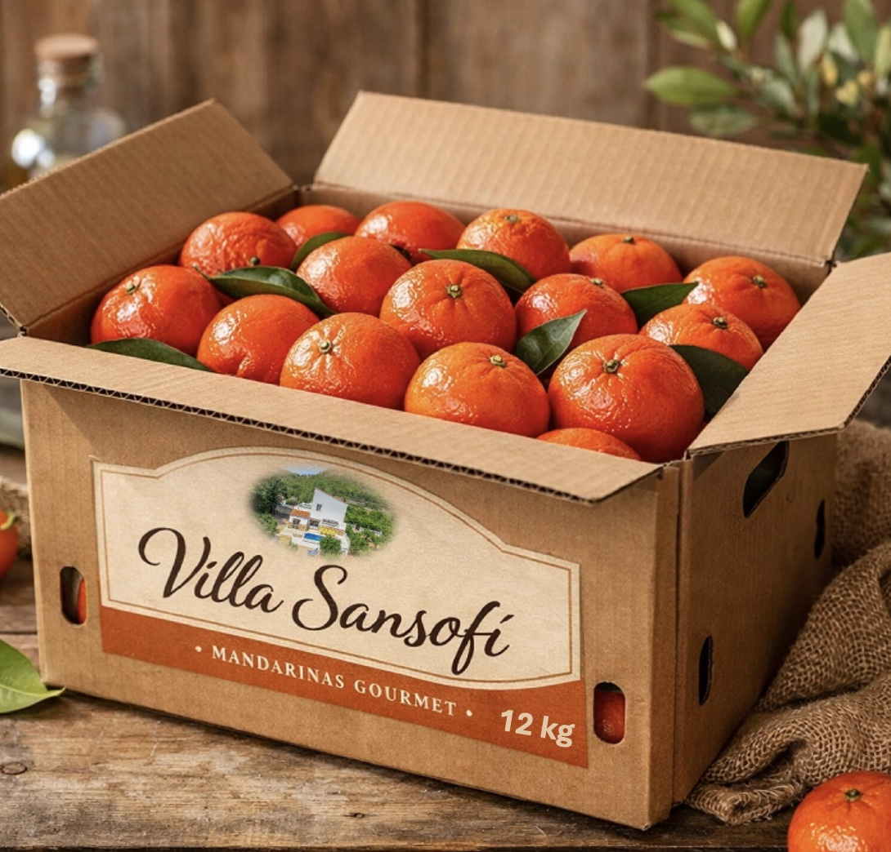

Formatos disponibles


12 kg
34 €
Envío semanal hasta agotar existencias · Envíos directos desde la Finca Sansofí sin intermediarios
Cultivamos nuestras mandarinas en la Finca Sansofí, una finca familiar valenciana.
Tres generaciones dedicadas a la agricultura.
Cultivamos nuestras mandarinas en la Finca Sansofí, una finca familiar valenciana rodeada de naranjos, al pie de la sierra de Corbera, en un entorno que influye en la calidad del fruto. Apostamos por ofrecer mandarinas de máxima calidad, seleccionadas para llegar al consumidor en las mejores condiciones.
Cuidamos cada árbol de forma individual y recolectamos a mano, seleccionando únicamente la fruta que está lista para ser entregada. Preferimos priorizar la calidad frente a la cantidad. Por eso no producimos en masa ni aceleramos la recolección: recogemos solo cuando el fruto alcanza su punto óptimo de maduración.
Trabajamos con la variedad Tango. Es una mandarina sin semillas, fácil de pelar y adecuada para niños, pensada para el consumo diario de toda la familia.
Tres generaciones dedicadas a la agricultura.
Rellena el formulario con tus datos y el formato que prefieras.
Recogemos los pedidos y preparamos un único envío semanal.
Recolectamos manualmente entre lunes y martes, según la climatología.
Recibes las mandarinas entre jueves y viernes, listas para el fin de semana.
Envío semanal hasta agotar existencias · Envíos directos desde la Finca Sansofí sin intermediarios
Introduce tus datos de contacto y envío.
Pago seguro mediante Bizum, Paypal o Transferencia bancaria.
*Precio del envío incluido.